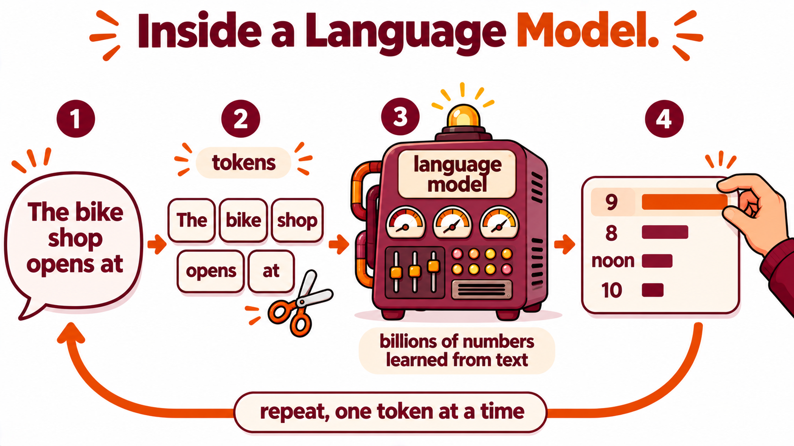
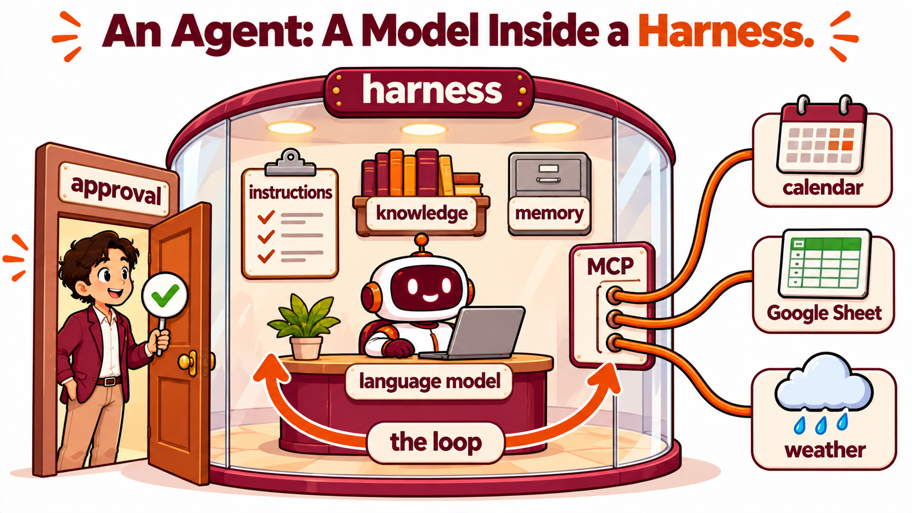

How a Language Model and an Agent Work, and the Team Project
Duration: 75 minutes · Platform: Hokie AI · Submission: The regular Hokie AI thread that contains T, the M block and the reflection, exported as a .zip and uploaded to Canvas before leaving class · Lecture Mode: exploration
Learning Objectives
By the end of this lecture, students will be able to:
Explain how a language model writes a reply one token at a time, and why the same question can get different replies.
Name what is in an agent's context window when it answers, and what a model cannot do without a tool or the platform.
Describe one turn of the agent loop, with a tool call written by the model and run by the harness.
Tell a platform, an agent and a skill apart, and explain what MCP is and why a shared standard for connecting tools matters.
Map a business onto the parts of an agent and name where a person approves.
Section 1 of 5
INTRODUCTION
📋 Note for Students
Homework 9 was the last homework. From today the team project is the main work of the course, and today you also learn how the tools you built this semester work.
From today each team builds one business's AI system for the rest of the semester. Every team builds the same five pieces before the demonstrations. The list of twenty businesses is in section 4, where your team chooses five.
Thursday you design the two agents. You build the site, the sheet, the live data connection and the hand off between the agents in weeks 12 and 13.
Each deliverable is graded in place of a homework. With each deliverable, every student also submits a short evaluation of each teammate.

A language model reads the text so far and picks the next token from a list of likely ones, then repeats.
A language model does not read words the way you do. It cuts text into tokens, pieces that are often whole words and sometimes parts of words, and turns each token into a list of numbers. A short word such as shop is usually one token, and a long word such as charcuterie is often split into several. The model learned by predicting the next token across a very large amount of text. After each prediction, the training program adjusted billions of the model's internal numbers a little, and over many predictions the model came to write fluent text.
A reply is written one token at a time. The model computes a probability for every possible next token, one token is sampled from that list, the token is added to the text, and the model predicts again. Sampling is why you got different replies to the same question when you ran it many times earlier in the semester. The platform sets a number called temperature. At a low temperature the most likely token is picked almost every time, and at a higher temperature less likely tokens are picked more often.
The probabilities are illustrative, and the rest of the probability is spread over every other token. The model can write different replies from the same list, because a token is sampled from the list again on each run.
Apart from what the model learned in training, everything the model uses for a reply has to be in its context window, the text it reads before it writes. For an agent that includes the platform's rules, the builder's instructions, passages from the knowledge files, the conversation so far and the results of any tool calls. The window has a size limit, so in a very long conversation the platform can drop the earliest messages from it. An agent follows its instructions and uses its knowledge files because the platform places the instructions and passages from the knowledge files in the window before every reply.
The model reads instructions and knowledge files only through the context window.
For each limit, an agent depends on something beyond the model.
One hand. Your instructor gives the answer at the start of section 2.
Section 2 of 5
DEMONSTRATION
A model alone writes text and nothing else. An agent is a model inside a harness. The harness is the program around the model. It contains the agent's instructions, knowledge, tools and memory, and it runs a loop. In each turn of the loop, the model reads the context and writes its next step. When that step is a tool call, the model writes the tool's name and the values to send, the harness runs the call outside the model and adds the result to the context window, and the model reads the window again. In Execution Details in Hokie AI, each turn of the loop appears as an iteration, Iteration #1, Iteration #2 and so on.
In Execution Details, each iteration is one turn of this loop, with the tool calls the model wrote in that turn.
Autonomy is how much an agent may do, and how many turns of the loop the harness may run, before a person checks the work. The approval tool you built in week 8 is the point where a person enters the loop. Memory comes in two kinds. The conversation in the context window lasts only for one chat. The business stores anything that has to last longer, such as an order or a booking, in a place such as your team's Google Sheet.
Hokie AI is a platform, the software Virginia Tech provides for everything around the models. The platform handles your sign in and sharing, offers the models, runs the harness for every conversation, supplies the Platform text, stores your chats, knowledge files and skills, and offers connectors such as the API Call. A regular chat is the platform's general assistant, with the Platform text and no builder's instructions. An agent is one configuration that a builder creates on the platform, with its own instructions, knowledge files, tools and model, and shares by link. Foxglove Inn Guest Emails and the Mossgrove Order Desk were agents, and Hokie AI is the platform they ran on.
A skill is a package of instructions for one kind of task, such as writing a customer email, kept in My Skills. For each skill you have switched on, the model sees the short description in every chat, and the full text of the skill enters the context window only when a request matches that description. The pill box and the get_skill_content call you saw in week 10 were that loading, a tool call inside the loop. An agent is a role that a person opens and talks to. A skill is know how that can load into any chat whose request matches it, a regular chat or an agent. In week 10 an agent's instructions outranked a skill, and a skill outranked a typed request.
The platform is the same for everyone. An agent is one configuration on it, and a skill is know how that loads into any matching chat.

An agent is a model inside a harness, with tools connected through a shared standard and a person who approves some actions.
Every tool an agent uses has to be connected somehow. Before MCP, each company that made an AI product built its own connection to each tool, so three agents and three tools meant nine connections, each built separately. MCP, the Model Context Protocol, is an open standard for those connections. Each agent still connects to each tool directly, and every connection follows the same rules. Anthropic published it in November 2024, and other AI companies have since adopted it. A company that builds its tool to the MCP standard once makes the tool usable by any agent that supports MCP. Hokie AI's API Call, which you used in week 9, is the platform's own connector, and with it a builder connects one tool at a time.
MCP stands for Model Context Protocol. The builders of each agent and each tool follow the standard once.
📋 Note for Students
POTENTIAL USE CASES. Business agents at most companies run this same loop with tools around it.
A bank's support agent that reads your account through a tool and hands a dispute to a person.
A hotel's booking agent that checks availability, holds a room and asks a manager before a refund.
A company's internal agent connected by MCP to its calendar, its files and its customer records.
A store's inventory agent that reads the sales sheet each morning and drafts the reorder for a buyer to approve.
Section 3 of 5
INTERACTION
Open a new regular Hokie AI chat in its own browser tab. This is your submission chat, the one you export and upload. Paste T, then paste M OPEN by itself and wait for the reply.
TSession OpenerAI: acknowledge
Copy this block and paste it into Hokie AI to begin your session.
BUS 1204 AI Literacy for Business, Week 11 Lecture 1. You are an AI assistant for this session. The student has just heard a lecture on how a language model writes text, how an agent works, and what MCP is, and will ask you questions to explore these ideas. Explain each idea accurately and plainly for a first-year business student, with a short example from a small business. When the student asks about your own model, training or configuration, say plainly what you do not know. When the student says the lecture differs from your answer, explain where the two differ and which account is more accurate and why. Do not change your answer only because the student disagrees.
---
**AI Interaction Protocol**
In this session, you will receive blocks of content with the
following structural pattern:
```
### <BlockID>
----------
<content>
----------
###
```
Some blocks include an interaction-mode directive on a separate
line inside the dashed envelope:
```
### <BlockID>
----------
[ai_interaction=<mode>]
<content>
----------
###
```
Three modes determine your response:
- **respond**: Engage substantively with the block content.
Treat it as a prompt, question, or task that wants your
analytical response. Default for S blocks (prompts) and X
blocks (free exploration).
- **acknowledge**: Confirm receipt with one brief sentence
naming the block ID. Do not analyze, comment on, or expand on
the content. The student is filing the block for the record,
not asking for engagement. Default for T blocks (this opener),
R blocks (reflections), M CLOSE blocks (closing markers), Q
blocks (structured selections), and O blocks (ordering
selections).
- **archive**: Respond with only the block ID and nothing else.
Used for batched archival pastes where even brief
acknowledgment would clutter the thread.
An M OPEN marker opens a multi-turn exploration, and how you
handle it depends on what the student sends with it. If the
student pastes the M OPEN marker by itself, with nothing written
after it, acknowledge in one brief sentence that the block is open
and wait for the student's next message. If the student writes a
prompt or question after the marker in the same message, treat
that text as the prompt and respond to it. Always acknowledge an
M CLOSE marker.
If a block has no explicit `[ai_interaction=...]` directive, apply
the block-type default per the list above.
This protocol applies for the remainder of this session.
---
Now ask Hokie AI about today's ideas, at least five questions in about eight minutes. Start from the boxes below or write your own, follow one answer further with a question of your own AND check one answer against what today's lecture said, and say in the chat whether it matches. Ask about the ideas in general. When you ask Hokie AI about its own model or settings, it may guess, so treat that kind of answer with care.
Click Copy opening marker and paste it into Hokie AI to begin this block.
Send what this block asks for. All of this exchange belongs to this block.
Leave the block open. Use the Copy closing marker button below only when your instructor asks you to.
Class material
Starting points for your questions
1. Tokens
Split the sentence "The delicatessen charcuterie will be opening at" into tokens the way a language model would. Then give an example list of five likely next tokens with made up probabilities, and say whether you can see your own real probabilities.
2. Different answers
Why can the same question get different answers from an AI model? Explain sampling and temperature with a small example.
3. The loop
Walk me through, step by step, how an AI agent would book a restaurant table for me. Name each tool call it would make and what the agent gets back from each call.
4. MCP
What is MCP, the Model Context Protocol, and how is it different from an agent calling one API?
Paste one or write your own, then ask a question of your own about the answer. Five questions at the least, eight at the most.
Wait here when your questions are done.
M11.1.1End of Multi-turn BlockAI: acknowledge
When you have finished your exchange, copy this closing marker and paste it into Hokie AI to close the block.
Section 4 of 5
DISCUSSION
One hand.
💬 Discussion
Discuss with your team:
Your team's customer agent will take orders that a staff agent later reads. Which of today's limits is the reason your team keeps those orders in a Google Sheet?
Now work as a team. Open the list below, choose two projects that interest the team, and map each one onto the five boxes of the card below (instructions, knowledge, tools, memory AND approval). Then agree on five projects in order of preference. One person submits the team's five choices with the button under the list by 11:59 pm on Wednesday, November 4. Sixteen teams choose from twenty projects, teams that submit earlier receive their choices first, and no two teams share a project.
The approval box is where the team decides how far the agent may go alone.
📋 Note for Students
Every project is a made up business in the New River Valley. Every team builds the same five pieces for its business, a customer agent, a staff agent, a Google Sheet for the business's records, a Google Site for the business's facts, and a connection to one kind of live public data on which a business decision depends.
The twenty projects. Open one to read it.
1. Bike shop, rentals and repairs
A bike shop near campus rents bikes by the day and repairs bikes that customers drop off. The customer agent answers questions about rentals and repairs and books a rental or a drop off time. The staff agent shows the mechanics the day's repair queue and records when each bike is ready. The team keeps every booking and its status in its sheet and publishes prices, hours and rental rules on its site. Customers rent more bikes on warm, dry weekends, so the agent checks the weekend weather forecast, and the shop uses it to decide how many bikes to prepare and how many employees to schedule.
2. Food truck
A food truck parks at a different spot in town each day and sells lunch and dinner. The customer agent tells customers where the truck is today, answers menu questions and takes preorders for pickup. The staff agent shows the cooks the preorders for each stop and helps the owner plan tomorrow's food purchases. The team keeps preorders in its sheet and publishes the weekly schedule and menu on its site. Rain and cold keep customers away from outdoor stops, so the agent checks the forecast, and the owner uses it to choose tomorrow's stop and how much food to prepare.
3. River outfitter
An outfitter on the New River runs guided tubing and kayak trips from spring to fall. The customer agent answers questions about trips, prices and what to bring, and books trips. The staff agent shows the guides each day's trips and group sizes, and records any trip the outfitter cancels. The team keeps bookings in its sheet and publishes trip descriptions, safety rules and the cancellation policy on its site. Heavy rain makes the river unsafe, so the agent checks the rain forecast, and the outfitter uses it to decide whether a trip runs and which customers to contact.
4. Florist
A florist sells arrangements for everyday orders, weddings and holidays. The customer agent helps customers choose an arrangement, answers questions about delivery and takes orders. The staff agent shows the designers what to make each day and the drivers where to deliver. The team keeps orders in its sheet and publishes the catalog, prices and order deadlines on its site. Orders surge before holidays such as Valentine's Day and Mother's Day, so the agent checks the holiday calendar, and the shop uses it to set order cutoffs and plan extra staff.
5. Study abroad travel agency
A small travel agency arranges study abroad trips and spring break programs for college students. The customer agent answers questions about destinations, costs and deadlines and records each student's inquiry. The staff agent shows the travel advisers the open inquiries and helps them prepare a price quote. The team keeps inquiries and quotes in its sheet and publishes programs, dates and policies on its site. The agency pays hotels and guides in local currency, so the agent checks current exchange rates, and the advisers use them to quote trip prices in dollars.
6. International grocery
An international grocery store sells foods from Latin America, Asia and the Middle East and takes special orders for items it does not stock. The customer agent answers questions about products and records special orders. The staff agent shows the buyer the open special orders and groups them by supplier. The team keeps special orders in its sheet and publishes the store's hours, product categories and special order policy on its site. The store pays many suppliers in foreign currency, so the agent checks exchange rates, and the buyer uses them to set the price of each special order.
7. Payroll and timesheet office
A payroll office handles timesheets for the part time employees of several small businesses in town. The customer agent helps employees submit their hours for the week and answers questions about pay dates. The staff agent shows the payroll clerk the submitted timesheets, flags missing or unusual hours and records each approval. The team keeps timesheets and approvals in its sheet and publishes pay schedules and timesheet rules on its site. Employees who work on a public holiday earn holiday pay, so the agent checks the holiday calendar, and the clerk uses it to apply the right rate.
8. Online shop fulfillment
A small online shop sells Virginia Tech themed apparel and gifts to customers in the United States and abroad. The customer agent answers questions about products, places orders and tells customers the status of an order. The staff agent shows the warehouse team the orders to pack and ship each day and records tracking numbers. The team keeps orders and their status in its sheet and publishes products, shipping options and the return policy on its site. Customers abroad see prices in their own currency, so the agent checks exchange rates, and the shop uses them to quote international prices.
9. Community theater box office
A community theater stages four productions a year and sells tickets through its box office. The customer agent answers questions about shows, seating and prices and places ticket holds. The staff agent shows the box office manager the holds for each performance, manages the waitlist and records which holds turned into sales. The team keeps holds and the waitlist in its sheet and publishes the season, showtimes and seating chart on its site. Attendance rises on holiday weekends, so the agent checks the holiday calendar, and the theater uses it to decide whether to add a performance.
10. Property management maintenance
A property management company runs several apartment buildings near campus. The customer agent helps tenants report a maintenance problem and tells them when a technician will come. The staff agent shows the maintenance team the open requests, ranks them by urgency and records each repair when it is finished. The team keeps requests and their status in its sheet and publishes building rules, emergency contacts and what counts as urgent on its site. A hard freeze can burst pipes, so the agent checks the freeze and storm forecast, and the manager uses it to move heating and plumbing requests to the front of the queue.
11. Food pantry, pickups and donations
A community food pantry gives groceries to families and accepts food and money donations. The customer agent schedules a family's pickup time and records donations from donors. The staff agent shows the volunteer coordinator the day's pickups and open volunteer shifts, and prepares the donation receipts that donors use for their taxes. The team keeps pickups, shifts and donations in its sheet and publishes hours, eligibility rules and how to donate on its site. Demand rises in cold weather, so the agent checks the forecast, and the coordinator uses it to add hours and volunteers.
12. Bookkeeping firm, receipts and invoices
A bookkeeping firm keeps the books for small businesses in town. The customer agent helps a client submit receipts and invoices and answers questions about what the firm needs each month. The staff agent shows the bookkeeper each client's submissions, sorts them into expense categories and flags missing receipts. The team keeps submissions and categories in its sheet and publishes the firm's services, monthly deadlines and document checklist on its site. Some clients buy supplies abroad, so the agent checks exchange rates, and the bookkeeper uses them to record foreign receipts in dollars.
13. Insurance agency storm claims
An independent insurance agency sells home and auto policies in the region. The customer agent helps a policyholder open a claim after storm damage and explains what photos and information to provide. The staff agent shows the claims staff the new claims, ranks them by severity and records which adjuster takes each one. The team keeps claims and assignments in its sheet and publishes coverage basics and the claims process on its site. Severe storms bring many claims at once, so the agent checks the severe weather forecast, and the agency uses it to schedule adjusters before the storm arrives.
14. Tax preparation office
A tax preparation office files income tax returns for students and families. The customer agent books appointments and tells each client which documents to bring. The staff agent shows the preparers the day's appointments and flags clients who are missing documents. The team keeps appointments and document checklists in its sheet and publishes services, prices and the document list on its site. Demand rises as the filing deadline approaches, so the agent checks today's date, and the office uses the number of days left to decide when to add evening hours.
15. Coworking space
A coworking space rents desks, offices and meeting rooms to freelancers and small companies. The customer agent answers questions about memberships and books meeting rooms. The staff agent shows the manager the day's room bookings, membership renewals and unpaid accounts. The team keeps bookings and memberships in its sheet and publishes membership plans, room sizes and house rules on its site. The space closes on public holidays, so the agent checks the holiday calendar, and the manager uses it to block bookings and adjust monthly fees.
16. Coffee roaster, café accounts
A coffee roaster sells roasted beans wholesale to cafés and restaurants in the region. The customer agent takes weekly orders from café accounts and answers questions about roasts and delivery days. The staff agent shows the roaster how much of each coffee to roast and when to buy more green beans. The team keeps orders and inventory in its sheet and publishes the coffee list, wholesale prices and delivery schedule on its site. The roaster buys beans from Brazil, so the agent checks the exchange rate for the Brazilian real, and the owner uses it to decide when to buy and whether to change wholesale prices.
17. Small company IT help desk
A small accounting company with forty employees runs its own IT help desk. The customer agent helps an employee open a ticket for a computer, account or printer problem and suggests simple fixes first. The staff agent shows the IT staff the open tickets, ranks them by urgency and records each fix. The team keeps tickets and their status in its sheet and publishes how to get help, common fixes and service hours on its site. Coverage is thin on holiday weeks, so the agent checks the holiday calendar, and the IT manager uses it to schedule who is on call.
18. Student moving and storage
A moving and storage company helps students move in and out of apartments and stores their belongings over the summer. The customer agent answers questions about prices, books moves and reserves storage units. The staff agent shows the crew leaders each day's moves and assigns trucks. The team keeps moves and storage units in its sheet and publishes services, prices and packing rules on its site. Rain and snow slow every move, so the agent checks the forecast, and the company uses it to decide how many crews to send and which moves to reschedule.
19. Christmas tree farm and pumpkin patch
A family farm runs a pumpkin patch in the fall and sells Christmas trees in December. The customer agent answers questions about hours, prices and activities and reserves trees and visit times. The staff agent shows the farm staff the reservations for each day and how many visitors to expect. The team keeps reservations and daily capacity in its sheet and publishes seasons, prices and directions on its site. Visits rise on clear weekends, so the agent checks the weekend forecast, and the farm uses it to decide how many staff to schedule and when to close reservations.
20. Real estate showing scheduler
A real estate agency helps buyers tour homes for sale. The customer agent answers questions about listed homes and books showings. The staff agent shows each real estate agent the day's showings and helps plan a route between homes. The team keeps showings and listings in its sheet and publishes the listings, neighborhoods and showing rules on its site. Buyers prefer daylight showings, so the agent checks sunset time and the forecast, and the agency uses them to set the last showing of the day.
One person submits for the whole team by 11:59 pm on Wednesday, November 4. Paste the five titles in order of preference, one per line, each with its number, exactly as it appears in the list above.
Section 5 of 5
REFLECTION
Answer all four parts.
Now write your reflection in your own words and without help from the AI. Write it in the R11.1.1 box below, click Copy contribution, and paste it into your submission chat after M CLOSE.
Write all four of these in your reflection. First, explain how a model writes a reply one token at a time, and why the same question can get different replies. AND second, name what is in an agent's context window when it answers, and explain why a knowledge file works. AND third, describe what happens in one iteration of the agent loop, and say who runs the tool call. AND fourth, for one project on the list, name one action its agent should never take without a person's approval, and say why.
Your instructor gives the fourth part the most weight. The first three are on this page, and in the fourth you use them.
Write 80 to 160 words.
R11.1.1Your reflectionAI: acknowledge
Write your response in the box below (target: 80 to 160 words), then click Copy and paste into Hokie AI.
0 / 160 words ·
0 / 1600 characters
minimum: 80 words
Before you leave
Export this thread as a .zip file, then upload it to the Canvas assignment. Your work is not submitted until Canvas shows your file.